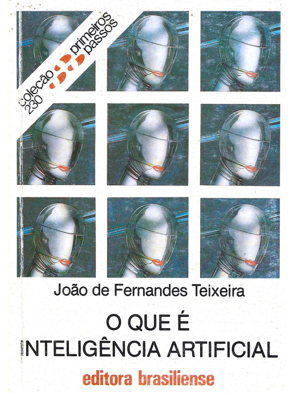

Resenha do livro "O que é inteligência artificial" da Editora Primeiros Passos
Publicado em
O livro “O que é inteligência artificial” do escritor João Fernandes Teixeira explica, por meio de fontes filosóficas e computacionais, os dilemas envolvidos no uso das inteligências artificiais, explorando também temas mais técnicos, como a base de funcionamento de computadores. Tudo isso em um pequeno livro da Coleção Primeiros Passos publicado pela Editora Brasiliense.
Logo na introdução, o autor explica que para os pesquisadores da Inteligência Artificial a cabeça humana funciona como um computador, e que por isso o estudo sobre tal mecanismo é tão importante para a compreensão das atividades humanas. Neste capítulo, são usados exemplos para ilustrar a expectativa do autor em relação às inteligências artificiais. João Fernandes Teixeira, por exemplo, parece entusiasmado ao dizer que para a linguística, a IA poderia se tornar uma máquina universal de tradução, contendo a raiz fundamental de todas as linguagens. Na atualidade, pode-se dizer que o autor estava certo, visto a facilidade com que os LLMs (abreviação do inglês para Large Language Models) conseguem processar línguas humanas — e até mesmo outras linguagens, como as de máquinas e as “linguagens” usadas por animais. Por esse e outros casos, faz-se necessário lembrar o contexto no qual o livro foi escrito: ainda no século passado, quando os modelos de IA não eram tão avançados nem tão conhecidos pelo público geral.
No próximo capítulo, intitulado “Um pouco de história e de estória”, o autor dá um embasamento histórico sobre a IA, afirmando que a ideia de construir uma máquina pensante ou uma criatura artificial que imitasse as habilidades humanas é muito antiga. A lenda de Joseph Golém, o mito do flautista mecânico e o “pato de Vaucanson” são exemplos de ideias advindas dos séculos passados que respaldam o conceito de um ser criado para ser autônomo, capaz de agir por si mesmo sem a intervenção humana. Descartes (1596–1650) e La Mettrie (1709–1751) foram filósofos que escreveram sobre esse tema, sendo o primeiro conhecido por defender que seria impossível criar um autômato que se igualasse aos seres humanos, enquanto La Mettrie defendeu o contrário. De uma forma ou de outra, mesmo na atualidade, ainda não há uma resposta clara para essa pergunta — afinal, a humanidade ainda não foi capaz de criar algo além de um algoritmo previsível e inconsciente. Por isso, a ideia de uma IA realmente autônoma e consciente é apenas realidade no mundo da ficção, tendo como exemplo o famoso personagem Frankenstein, do romance de Mary Shelley.
Em seguida, no capítulo “A invenção de Turing”, João Fernandes Teixeira introduz uma escrita mais técnica, voltada principalmente à parte computacional das inteligências artificiais. Nessa parte do livro, temos explicações que resumem os mecanismos essenciais para o funcionamento de computadores, com base nos estudos do cientista Alan Turing, considerado o pai da ciência da computação. Ao decorrer da explicação, é afirmado que Alan Turing tenha se suicidado provavelmente por conta da sua homossexualidade. Mas isso não necessariamente é verdade — afinal, não foi a orientação sexual de Turing que diretamente o levou ao suicídio, e sim o preconceito e a discriminação que decorreram do fato de ele ter se assumido homossexual. Essa correção faz-se importante para que a ideia de ser “homossexual” não seja associada a um infortúnio ou a um fato desastroso.
O capítulo “Inteligência artificial e filosofia” começa contando o caso de uma palestra em Londres, na qual um professor de filosofia, enquanto defendia sua teoria de que mente e cérebro são a mesma coisa, recebeu a seguinte pergunta de uma aluna: “Mas, professor, se mente e cérebro são a mesma coisa, e se sabemos que quase 50% do cérebro é composto de água, então o senhor quer dizer que muitos de nossos pensamentos nada mais são do que água? E se assim for, por que a água que está no cérebro ‘pensa’ e a água que está no corpo ‘não pensa’?”. Com essa pergunta, muitas outras indagações e até mesmo suposições podem ser feitas; e durante esse capítulo, algumas delas são exploradas de forma a relacionar o tema com inteligência artificial. Sabe-se que a IA, mesmo na atualidade, não tem a capacidade de pensar por si mesma. Na verdade, o que os modelos atuais são capazes de fazer é relacionar dados, realizar cálculos e identificar padrões — não conseguindo se aproximar do que poderia ser chamado de consciência. Por isso, a ideia de um software sendo chamado de inteligente ainda é discutível; sendo mais plausível relacionar a palavra “inteligência” à capacidade cognitiva de seus criadores e ao raciocínio daqueles que escreveram o material usado para o treinamento da IA.
Em “O enigma do significado”, é explicado que a criação da IA consegue replicar a capacidade visual e certos aspectos da atividade linguística humana, mas ainda conta com uma limitação considerável em outros quesitos. O filósofo norte-americano John Searle expressa sua ideia de uma IA mecânica e não autônoma por meio do argumento do quarto chinês, com o qual busca mostrar que a IA não entende propriamente o que está fazendo — apenas usa um método pré-estabelecido para dar respostas condizentes com o que é demandado. Da mesma forma que uma câmera de televisão apenas reproduz imagens que serão interpretadas por humanos, e não exatamente “vê” o que está sendo gravado.
Por fim, em “Conclusão”, o autor explica que o objetivo dos avanços de pesquisa na área de IA não é criar novos seres semelhantes aos humanos, e sim usar essa tecnologia para entender melhor o funcionamento da mente humana. Conclusão essa que ainda é discutível, até porque ainda não há computadores capazes de simular a consciência humana (também chamada de “alma” por alguns). João Fernandes Teixeira diz que “apostar no sucesso ou no fracasso do projeto de IA nas próximas décadas é algo que fica por conta do grau de otimismo que queiramos ter”. Hoje, na segunda década do século XXI, as inteligências artificiais são usadas amplamente pela população, principalmente para atividades repetitivas e que podem ser reproduzidas pelo processamento intensivo de dados — sendo ainda uma dúvida se, no futuro, as inteligências artificiais terão capacidade equiparável à humana no que se refere à autonomia e criatividade.
Apesar da época em que foi escrito, o livro contém explicações e argumentos ainda muito válidos, que criam reflexões verdadeiras a respeito do uso da IA — sendo uma ótima leitura para todos que desejam entender um pouco mais sobre o assunto.